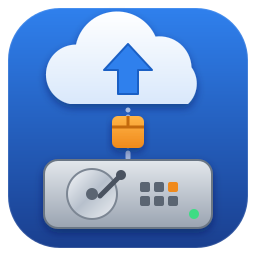

BKHD Backup crea una copia esatta di un intero disco (o di una partizione): non copia i file uno per uno, ma legge tutti i settori del disco, dal primo all'ultimo. La copia contiene quindi anche tabella delle partizioni, settori di avvio, sistemi operativi, partizioni cifrate e spazio libero: ripristinandola si ottiene un disco identico all'originale, pronto per l'avvio.
La copia può andare sul cloud oppure su un disco o una cartella locale (disco esterno, NAS montato). Verso il cloud la copia viaggia senza passare dal disco locale: il disco viene suddiviso in pacchetti di dimensione scelta da te: dai formati dei floppy (1,2 MB, 1,44 MB, 2,88 MB) fino a 8 GB. Ogni pacchetto viene preparato in una cartella temporanea che esiste solo in memoria RAM, caricato sul cloud e poi cancellato dalla RAM.
nome.part00001.bkhd dentro una cartella montata in RAM (tmpfs con opzione noswap, quindi i dati
non finiscono nemmeno nella partizione di swap).Il ripristino fa il percorso inverso: scarica un pacchetto in RAM, ne verifica l'integrità, lo scrive sul disco nella posizione esatta, svuota la RAM e passa al successivo (capitolo 7).
| Requisito | Dettagli |
|---|---|
| Sistema operativo | Ubuntu 20.04 o successivo, Debian 11 o successivo e derivate (Linux Mint, Pop!_OS, Zorin OS, elementary OS, MX Linux, Kubuntu, Xubuntu…). |
| Programmi necessari | rclone (collegamento al cloud), python3-gi e
gir1.2-gtk-3.0 (interfaccia), pkexec (permessi di amministratore). Facoltativo:
zstd per la compressione. Vengono installati automaticamente con il pacchetto. |
| Password di amministratore | Necessaria per leggere o scrivere un intero disco: viene chiesta all'avvio di ogni backup o ripristino. |
| Memoria RAM libera | Dimensione del pacchetto + circa 600 MB (vedi tabella sotto). |
| Account cloud | Uno qualsiasi dei servizi supportati da rclone, con spazio sufficiente. |
| Connessione Internet | Stabile; il backup può essere interrotto e ripreso in qualsiasi momento. |
| Formato | RAM libera necessaria | Pacchetti per una chiavetta da 16 GB | Pacchetti per un disco da 500 GB | Pacchetti per un disco da 1 TB |
|---|---|---|---|---|
| Floppy 5¼" — 1,2 MB | circa 580 MB | 12.591 | 406.902 | 813.803 |
| Floppy 3½" — 1,44 MB | circa 580 MB | 10.493 | 339.085 | 678.169 |
| Floppy 3½" ED — 2,88 MB | circa 580 MB | 5.247 | 169.543 | 339.085 |
| 50 MB | circa 630 MB | 296 | 9.537 | 19.074 |
| 100 MB | circa 680 MB | 148 | 4.769 | 9.537 |
| 650 MB (CD) · 700 MB | circa 1,2 GB | 23 | 734 | 1.468 |
| 1 GB | circa 1,6 GB | 15 | 466 | 932 |
| 2 GB | circa 2,6 GB | 8 | 233 | 466 |
| 4 GB (predefinito) · 4,7 GB (DVD) | circa 4,6 GB | 4 | 117 | 233 |
| 8 GB | circa 8,6 GB | 2 | 59 | 117 |
Come scegliere. Pacchetti più piccoli richiedono meno RAM e, se la connessione cade, si perde meno lavoro. Pacchetti più grandi sono molto più veloci, perché ogni pacchetto è un trasferimento separato. L'interfaccia mostra la RAM disponibile e il numero di pacchetti, e impedisce l'avvio se la RAM non basta.
Formati floppy (1,2 – 2,88 MB). Utili per partizioni e chiavette piccole, per PC con pochissima RAM o per cloud che accettano solo file piccoli. Su un disco intero diventano centinaia di migliaia di file: il backup richiede giorni e alcuni servizi limitano il numero di file. Oltre 50.000 pacchetti il programma avvisa e chiede conferma.
Senza compressione il backup occupa esattamente quanto il disco (1 TB → 1 TB). Con la compressione zstd attiva (consigliata) lo spazio vuoto del disco occupa quasi zero: un disco da 1 TB con 200 GB di dati occupa in genere tra 120 e 200 GB sul cloud.
bkhd-backup_{{VERSION}}_all.deb.sudo apt install ./bkhd-backup_{{VERSION}}_all.debsudo apt remove bkhd-backup
La disinstallazione non tocca i backup già presenti sul cloud né la configurazione di rclone.
La versione di rclone nei repository può essere datata. Se un servizio cloud non funziona, installa l'ultima versione ufficiale:
sudo -v ; curl https://rclone.org/install.sh | sudo bash
Al primo avvio la barra in alto avvisa che non c'è ancora nessun cloud collegato. Il collegamento si fa una volta sola.
{{FIG:01-primo-avvio|Primo avvio: nessun cloud ancora configurato.|66}}Premendo Configura cloud… si apre un terminale con il programma rclone config. Rispondi così:
No remotes found, make a new one? n) New remote → digita n e premi Invio name> → digita un nome breve, es. gdrive Storage> → digita il nome o il numero del servizio, es. drive client_id> → lascia vuoto, premi Invio client_secret> → lascia vuoto, premi Invio scope> → 1 (accesso completo) service_account_file> → lascia vuoto, premi Invio Edit advanced config? → n Use web browser to automatically authenticate rclone with remote? → y si apre il browser: accedi con il tuo account e consenti l'accesso Configure this as a Shared Drive? → n Keep this "gdrive" remote? → y e/n/d/r/c/s/q> → q per uscire
Torna in BKHD Backup e premi il pulsante di aggiornamento (la freccia circolare) accanto al campo del cloud:
comparirà gdrive:. La stessa procedura vale per gli altri servizi:
| Servizio | Nome da scegliere in «Storage» | Note |
|---|---|---|
| Google Drive | drive | accesso tramite browser |
| Microsoft OneDrive | onedrive | accesso tramite browser, poi scegli «OneDrive Personal» |
| Dropbox | dropbox | accesso tramite browser |
| Mega | mega | email e password dell'account Mega |
| pCloud, Box, Yandex | pcloud, box, yandex | accesso tramite browser |
| Amazon S3, Wasabi, Cloudflare R2, MinIO | s3 | chiave di accesso e chiave segreta |
| Backblaze B2 | b2 | Application Key ID e Application Key |
| Nextcloud / WebDAV | webdav | indirizzo del server, utente e password |
| Server o NAS via SSH | sftp | indirizzo, utente, password o chiave |
Backup cifrati: per cifrare i pacchetti prima che lascino il PC, crea con
rclone config un secondo remote di tipo crypt che punta al primo (es. gdrive:BKHD)
e seleziona quello in BKHD Backup. Conserva la password di cifratura in un posto sicuro: senza, il backup non è
recuperabile.
Se le scritte sono troppo piccole (o troppo grandi) puoi ingrandire tutta l'interfaccia dal menu ☰, sezione Dimensione del testo:
Scorciatoie da tastiera: Ctrl + + ingrandisce, Ctrl + − riduce, Ctrl + 0 ripristina. La dimensione scelta viene ricordata ai successivi avvii.
Dal menu ☰ → Tema scegli l'aspetto del programma:
Anche il tema scelto viene ricordato ai successivi avvii.
Nella scheda Backup scegli cosa copiare, dove e come, in tre passi. Nell'esempio una chiavetta USB da 16 GB viene salvata su Google Drive in pacchetti da 2 GB.
{{FIG:02-backup-impostazioni|Passi 1 e 2: il disco da copiare e la destinazione.|70}}gdrive:)./media/utente/DiscoEsterno.BKHD).. _ -Il PC non va in sospensione mentre il backup è in corso. Puoi continuare a usarlo, ma per una copia perfettamente coerente evita di modificare file sul disco che stai copiando.
Al termine compare un messaggio di conferma e una notifica sul desktop. Espandendo Registro attività si vede la cronologia: per ogni pacchetto la quantità di dati letta, la dimensione compressa e la conferma «salvato sul cloud e rimosso dalla RAM».
Eventuali settori illeggibili (disco danneggiato) vengono riletti più volte; se restano illeggibili sono salvati come zeri e segnalati nel registro e nel manifest.
Scegli Disco o cartella locale come destinazione e indica la cartella (un disco esterno USB, un secondo disco interno, un NAS montato). I pacchetti vengono scritti direttamente sulla destinazione, senza passare dalla RAM: ogni pacchetto viene prima scritto con un nome provvisorio, sincronizzato sul disco e solo allora rinominato, quindi un pacchetto incompleto non viene mai scambiato per uno valido.
Per sicurezza il programma rifiuta di salvare il backup sullo stesso disco che sta copiando (o, al ripristino, di leggere il backup dal disco che sta sovrascrivendo).
Con Copia solo i settori usati il programma legge prima la mappa dei blocchi occupati di ogni partizione e salta lo spazio libero: un disco da 1 TB con 120 GB di dati richiede di leggere, caricare e (al ripristino) scrivere solo circa 120 GB.
| File system | Come viene analizzato |
|---|---|
| ext2, ext3, ext4 (Linux) | sempre, con dumpe2fs (presente in ogni Ubuntu) |
| NTFS, FAT, exFAT, Btrfs, XFS, HFS+, F2FS | con partclone (sudo apt install partclone) |
| swap | solo l'intestazione |
| partizioni montate, cifrate (LUKS), LVM, sconosciute | copiate per intero, per sicurezza |
| tabella delle partizioni, inizio e fine del disco | sempre copiati (MBR, GPT e GPT di riserva) |
Al ripristino vengono scritti solo i settori usati: lo spazio libero del disco di destinazione non viene
sovrascritto (per il file system è indifferente). La mappa usata viene salvata nel backup (usedmap.json).
Con Proteggi il backup con una password ogni pacchetto viene cifrato con AES-256-GCM prima di lasciare il PC. La chiave è ricavata dalla password con scrypt, un algoritmo volutamente lento che rende inefficaci i tentativi di indovinarla a forza bruta.
Se dimentichi la password il backup non è recuperabile, da nessuno. Conservala in un luogo sicuro (ad esempio un gestore di password).
Anche il manifest e gli indici di un backup protetto sono firmati con la chiave ricavata dalla password: chi controlla il cloud non può alterarli né spacciare il backup per «non protetto» (il programma ricorda quali backup erano protetti e blocca il ripristino se la protezione sparisce).
Restano in chiaro solo i dati descrittivi (nome del backup, dimensioni, disposizione delle partizioni): il contenuto del disco è sempre cifrato.
Il pulsante Controlla disco… legge tutti i settori del disco (senza modificare nulla) e lo stato
SMART (richiede smartmontools). Alla fine mostra quanti settori sono illeggibili e gli
indicatori di salute del disco.
Nel backup, l'opzione Settori danneggiati decide cosa fare con i settori illeggibili:
In entrambi i casi i settori illeggibili vengono salvati come zeri ed elencati nel registro e nel manifest.
Un disco con settori illeggibili o con stato SMART negativo va sostituito al più presto: fai subito il backup, preferibilmente con «Salta subito» se il disco peggiora a ogni lettura.
Se il backup si interrompe (pulsante Annulla, connessione caduta, PC spento, mancanza di corrente) i pacchetti già salvati restano validi: il file di configurazione del backup sulla destinazione registra fin dove si è arrivati.
{{FIG:13-interrotti|«Cerca backup interrotti»: l'elenco dei backup da riprendere.|72}}Se un upload fallisce per un problema di rete, il programma riprova da solo fino a 10 volte, con attese crescenti (15 s, 30 s, 1 min… fino a 5 min). Premendo Annulla, prima di fermarsi salva l'elenco dei pacchetti completati, così la ripresa non ripete lavoro già fatto.
Se esiste già un backup completo con lo stesso nome il programma rifiuta di sovrascriverlo: scegli un nome diverso.
Il ripristino su disco cancella tutto il contenuto del disco di destinazione. Per evitare errori, il
pulsante di conferma si attiva solo dopo aver scritto il nome del dispositivo (es. sdc).
Inoltre il programma rifiuta automaticamente:
Controlla con attenzione modello e dimensione del disco di destinazione prima di confermare. Un ripristino interrotto lascia il disco parzialmente scritto e non utilizzabile fino a un nuovo ripristino completo.
sudo sgdisk -e /dev/sdX e poi
ingrandire le partizioni con GParted.Un backup è utile solo se si può ripristinare. Con Solo verifica integrità il programma scarica ogni pacchetto in RAM, ne controlla l'intestazione e il codice SHA-256, decomprime i dati e li confronta con il codice dell'originale — senza scrivere nulla su disco.
{{FIG:08-verifica-in-corso|Verifica in corso: download del pacchetto 1 di 8 in RAM.|72}} {{FIG:09-verifica-completata|Esito positivo: tutti i pacchetti sono integri.|62}}Esegui una verifica dopo ogni backup importante e, periodicamente, sui backup più vecchi.
Copiare il disco da cui è avviato il PC mentre è in uso è possibile, ma i file modificati durante la copia potrebbero risultare incoerenti; il ripristino del disco di sistema è possibile solo dall'esterno. Per questo BKHD Backup crea una chiavetta USB avviabile: BKHD Live, un Ubuntu 24.04 minimale in italiano con:
Si avvia su PC con BIOS e con UEFI, anche con Secure Boot attivo (usa i componenti di avvio firmati da Canonical, come Ubuntu).
{{FIG:15-pennetta|La scheda «Pennetta e DVD»: l'immagine e la pennetta USB.|72}}.sha256.Con la partizione BKHD-DATI, avviando BKHD Live la partizione viene montata da sola e proposta come destinazione dei backup: basta scegliere il disco da copiare e premere Avvia backup.
Nella sessione live la RAM è condivisa con il sistema stesso: con 8 GB di RAM scegli pacchetti da 2–4 GB, oppure salva su un disco esterno (nessun limite di RAM).
Il motore bkhd-engine funziona anche senza interfaccia grafica, ad esempio su server o in script
pianificati. Va eseguito con sudo; rclone viene eseguito con l'utente che ha lanciato sudo, quindi usa
la sua configurazione cloud.
# backup di /dev/sda su Google Drive, pacchetti da 8 GB, compressi sudo bkhd-engine backup --source /dev/sda --remote gdrive: --path BKHD --name server-sda \ --chunk-size-mib 8192 --compression zstd # chiavetta da 16 GB in pacchetti "floppy" da 1,44 MB sudo bkhd-engine backup --source /dev/sdb --remote gdrive: --path BKHD --name chiavetta \ --chunk-size 1440K --compression zstd # disco esterno, solo settori usati, protetto da password (la chiede sul terminale) sudo bkhd-engine backup --source /dev/sda --remote /media/utente/Esterno --name portatile \ --used-only --encrypt --compression zstd # controllo dei settori e dello stato SMART sudo bkhd-engine scan --source /dev/sda # pennetta avviabile: crea l'immagine e la scrive su /dev/sdc (chiavetta USB) sudo bkhd-engine live-build --output ~/BKHD-Live/bkhd-live.iso sudo bkhd-engine live-write --image ~/BKHD-Live/bkhd-live.iso --target /dev/sdc --yes # pennetta live con spazio per i backup, chiavetta solo per i backup, DVD sudo bkhd-engine live-write --image /usr/share/bkhd-backup/live/bkhd-live-{{VERSION}}.iso --target /dev/sdc \ --yes --data-fs exfat sudo bkhd-engine usb-format --target /dev/sdc --fs exfat --label BKHD-DATI --yes sudo bkhd-engine disc-burn --image /usr/share/bkhd-backup/live/bkhd-live-{{VERSION}}.iso --device /dev/sr0 --yes # riprende un backup interrotto sudo bkhd-engine backup --source /dev/sda --remote gdrive: --path BKHD --name server-sda \ --chunk-size-mib 8192 --compression zstd --resume # elenca i backup presenti bkhd-engine list --remote gdrive: --path BKHD # verifica integrità sudo bkhd-engine restore --remote gdrive: --path BKHD/server-sda --verify-only # ripristino su /dev/sdb (cancella /dev/sdb!) sudo bkhd-engine restore --remote gdrive: --path BKHD/server-sda --target /dev/sdb --yes
| Opzione | Significato |
|---|---|
--chunk-size N | dimensione dei pacchetti con unità: 1200K, 1440K,
2880K (floppy), 50M, 100M, 650M, 4G, 8G…
da 1,2 MB a 8 GB (predefinito 4 GB) |
--chunk-size-kib N / --chunk-size-mib N | la stessa dimensione espressa in KB o in MB |
--compression zstd --level N | compressione zstd, livello 1–19 (predefinito 3) |
--remote /percorso | destinazione locale (percorso assoluto) invece di un cloud |
--used-only | copia solo i settori usati dai file system |
--encrypt / --password-stdin | protezione con password (chiesta sul terminale o letta dalla prima riga dello standard input) |
--bad-sectors retry|skip | settori illeggibili: riprova e copia (predefinito) o salta subito |
list --interrupted | elenca solo i backup interrotti |
--resume | riprende un backup interrotto con lo stesso nome |
--overwrite | sovrascrive un backup esistente con lo stesso nome |
--from-chunk N | riprende un ripristino interrotto dal pacchetto N |
--allow-incomplete | ripristina anche un backup interrotto (solo i pacchetti presenti) |
--retries N | tentativi per ogni trasferimento (predefinito 10) |
--rclone-config FILE | usa un file di configurazione rclone specifico |
--json | avanzamento in formato JSON (usato dall'interfaccia grafica) |
Ogni backup è una cartella sul cloud: <cartella>/<nome-backup>/.
gdrive:BKHD/
└── pc-casa-sdb-20261011-2015/
├── manifest.json descrizione del backup
├── index/
│ └── index-00000.json dati dei pacchetti 1–1000
├── pc-casa-sdb-20261011-2015.part00001.bkhd settori da 0 a 2 GB
├── pc-casa-sdb-20261011-2015.part00002.bkhd settori da 2 a 4 GB
├── …
└── pc-casa-sdb-20261011-2015.part00008.bkhd ultimi settori
Con l'opzione «solo settori usati» c'è anche usedmap.json (le zone del disco copiate); i pacchetti fatti
solo di spazio libero non vengono nemmeno creati. Nei backup protetti da password il manifest contiene i parametri
di cifratura (sale e costo di scrypt, un controllo della password) ma mai la password.
Con più di 10.000 pacchetti (tipico dei formati floppy) i pacchetti vengono divisi in sottocartelle da
1000 — g00000/, g00001/, … — perché molti servizi cloud rallentano o rifiutano cartelle con
troppi file. Il numero nel nome del pacchetto ha tante cifre quante ne servono (es. part000001).
Dividere l'indice in gruppi mantiene piccoli i file da aggiornare anche con centinaia di migliaia di pacchetti. I backup creati con la versione 1.0 (indice dentro il manifest) restano leggibili e, se interrotti, vengono convertiti automaticamente alla ripresa.
| Byte | Contenuto |
|---|---|
| 0 – 5 | firma BKHD\x01\n |
| 6 – 4095 | intestazione JSON: identificativo del backup, numero del pacchetto, posizione, lunghezza, codici SHA-256, compressione |
| 4096 – fine | i settori del disco, grezzi oppure compressi con zstd, ed eventualmente cifrati con AES-256-GCM; con «solo settori usati» i dati sono preceduti dalla tabella delle zone copiate |
Ogni pacchetto è autodescrittivo: anche senza manifest e indice si può sapere a quale backup e a quale posizione del disco appartiene.
Non rinominare, spostare o modificare i file dentro la cartella di un backup: il ripristino li riconosce dal nome e ne verifica il contenuto.
| Problema | Soluzione |
|---|---|
| «rclone non è installato» | sudo apt install rclone, poi riavvia BKHD Backup. |
| «Nessun cloud configurato» oppure il cloud non compare nell'elenco | Premi Configura cloud… (capitolo 4), poi il pulsante di aggiornamento accanto al campo del cloud. |
| «RAM insufficiente» (scritta rossa) | Scegli pacchetti più piccoli o chiudi programmi pesanti (browser, macchine virtuali). |
| «Autorizzazione non concessa» | È stata annullata la richiesta della password: riprova e inserisci la password del tuo utente (deve essere amministratore). |
| «Esiste già un backup completo chiamato…» | Cambia il nome del backup. |
| «Esiste un backup interrotto chiamato…» | Spunta Riprendi per continuarlo, oppure cambia nome. |
| «Il backup interrotto non corrisponde» | Per riprendere servono stesso disco, stessa dimensione dei pacchetti e stessa compressione. |
| Upload fallito dopo vari tentativi | Controlla la connessione e lo spazio libero sul cloud, poi riprendi il backup. Nel registro attività trovi il messaggio di errore di rclone. |
| Token scaduto / accesso al cloud negato | Rifai l'accesso: in un terminale rclone config reconnect gdrive: |
| «La destinazione è in uso» | Smonta le partizioni del disco (dall'app Dischi o con
sudo umount /dev/sdX1) oppure lavora da chiavetta live. |
| «Il pacchetto … sul cloud è danneggiato» | Il file sul cloud non corrisponde al codice SHA-256 originale: quella parte del disco non è recuperabile da questo backup. Esegui un nuovo backup. |
| Avviso arancione «Pacchetti molto piccoli per questo disco» | Hai scelto un formato floppy (o comunque piccolo) per un disco grande: verrebbero creati centinaia di migliaia di file. Scegli 650 MB o più, oppure usa i formati piccoli solo per partizioni e chiavette piccole. |
| Il cloud segnala troppi file o rallenta molto | Usa pacchetti più grandi. Sopra i 10.000 pacchetti il programma usa già sottocartelle da 1000 file. |
| Scritte troppo piccole o troppo grandi | Menu ☰ → Dimensione del testo, oppure Ctrl + + / Ctrl + − / Ctrl + 0. |
| «Password errata» | Controlla maiuscole/minuscole e la tastiera (in BKHD Live è italiana). Senza la password giusta il backup protetto non è recuperabile. |
| «…si trova sullo stesso disco di…» | Hai scelto come destinazione locale una cartella sul disco che stai copiando (o ripristinando): scegli un altro disco. |
| Partizione «copiata per intero (installa partclone)» | Per saltare lo spazio libero di NTFS, FAT, exFAT,
Btrfs o XFS installa partclone: sudo apt install partclone. |
| Il PC non si avvia dalla pennetta | Scegli la chiavetta dal menu di avvio (F12/F11/F8/Esc). Su PC molto vecchi abilita l'avvio USB nel BIOS; se lo schermo resta nero usa la «modalità sicura». |
| BKHD Live: niente Internet | Apri «Diagnosi rapida» sul desktop: indica se la rete è collegata. Per il Wi-Fi scegli la rete dall'icona in alto a destra. |
| Backup molto lento | Di solito dipende dalla velocità di upload della connessione. Attiva la compressione zstd: le zone vuote del disco non vengono praticamente trasferite. |
| BKHD Backup | |
|---|---|
| Versione | {{VERSION}} |
| Autore | fabionet |
| Contatto | fabionet666@gmail.com |
| Copyright | © 2026 fabionet |
| Licenza | GNU General Public License versione 3 o successiva (GPL-3.0-or-later) |
| Piattaforme | Ubuntu, Debian e derivate |
| Linguaggio | Python 3, interfaccia GTK 3 |
Le stesse informazioni sono visibili nel programma dal menu ☰ → Informazioni su BKHD Backup; dallo stesso menu si apre questa guida.
BKHD Backup è software libero: puoi redistribuirlo e/o modificarlo secondo i termini della GNU General Public License pubblicata dalla Free Software Foundation, versione 3 della licenza o (a tua scelta) qualsiasi versione successiva. In sintesi:
Il programma è distribuito nella speranza che sia utile, ma SENZA ALCUNA GARANZIA, nemmeno quella implicita di
commerciabilità o di idoneità a uno scopo particolare. Il testo completo della licenza è nel file LICENSE
e, sui sistemi Debian/Ubuntu, in /usr/share/common-licenses/GPL-3, oppure su
www.gnu.org/licenses/gpl-3.0.html.
| Componente | Uso | Licenza |
|---|---|---|
| rclone — rclone.org | trasferimento da e verso il cloud | MIT |
| Zstandard (zstd) | compressione dei pacchetti | BSD / GPL-2.0 |
| GTK 3 e PyGObject | interfaccia grafica | LGPL-2.1+ |
| Python 3 | linguaggio del programma | PSF License |
| polkit / pkexec | richiesta dei permessi di amministratore | LGPL-2.0+ |
| cryptography (Python) | cifratura AES-256-GCM | Apache-2.0 / BSD |
| partclone, e2fsprogs | mappa dei settori usati | GPL-2.0 |
| smartmontools | stato SMART dei dischi | GPL-2.0 |
| Ubuntu, Firefox e strumenti di BKHD Live | sistema della pennetta avviabile | licenze dei rispettivi progetti |
Questi componenti non sono inclusi nel pacchetto: vengono installati dai repository della distribuzione (per BKHD Live vengono scaricati dai server ufficiali di Ubuntu e Mozilla al momento della creazione).